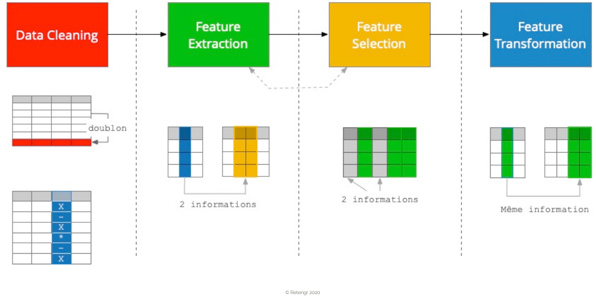

Feature engineering#
C’est quoi, et pourquoi c’est si important ?#
Le feature engineering (« ingénierie des features », ou transformation des variables) consiste à préparer et transformer les données brutes pour qu’elles soient exploitables par un algorithme de machine learning — et idéalement, pour qu’elles révèlent au mieux les patterns que le modèle doit apprendre.
L’analogie à garder en tête : vos données brutes sont comme des ingrédients sortis du marché. Un grand chef ne se contente pas de jeter les légumes dans une casserole : il les lave, les épluche, les coupe, parfois les blanchit. C’est cette préparation qui fait la différence entre un plat médiocre et un plat exceptionnel — pas le four. En ML, c’est pareil : la qualité du feature engineering pèse souvent plus dans le résultat final que le choix de l’algorithme.
La citation que tout data scientist connaît#
« Coming up with features is difficult, time-consuming, requires expert knowledge. Applied machine learning is basically feature engineering. » — Andrew Ng
Traduction : « Concevoir des bonnes features, c’est difficile, ça prend du temps, et ça demande de l’expertise métier. Le machine learning appliqué, c’est essentiellement du feature engineering. »
C’est pour ça qu’on dit souvent qu’un data scientist passe 80% de son temps à préparer ses données et seulement 20% à entraîner des modèles.
Pourquoi les données brutes ne suffisent pas#
Les algorithmes de machine learning ne sont pas magiques. Ils exploitent les données telles qu’elles sont — sans bon sens, sans connaissance du monde, sans intuition métier. Quelques exemples concrets :
Année de naissance ≠ âge. Un modèle ne « sait » pas qu’il faut soustraire l’année de naissance à l’année courante. Si on lui donne
1985, il verra un nombre — pas un âge. Il faut calculer l’âge nous-mêmes.Date de réservation et date de check-in. Pour un hôtel, ce qui compte n’est pas chacune isolément, mais leur différence (l’anticipation : « combien de jours à l’avance ? »). Le modèle ne pourra pas le déduire seul si on lui donne deux dates brutes.
Adresses, noms, tickets… Les algorithmes ne comprennent pas le texte. Ils attendent des nombres. On doit donc soit les encoder (catégoriel → numérique), soit en extraire des informations utiles, soit les ignorer.
Catégories en texte (
"rouge","vert","bleu"). Inutilisables telles quelles. Il faut les transformer en vecteurs numériques (one-hot encoding, ordinal encoding, embeddings…).Échelles très différentes entre variables (
age∈ [0, 100],revenu∈ [0, 1 000 000]). Pour certains algorithmes (KNN, SVM, régression régularisée, réseaux de neurones), c’est un problème majeur — le revenu va « écraser » l’âge dans tous les calculs de distance. Solution : normaliser.
On doit donc transformer les données pour qu’elles soient utilisables par les algorithmes :
Pour leur permettre de fonctionner — sinon le modèle plante littéralement (NaN, types incompatibles, dimensions inconnues).
Pour améliorer la qualité des résultats — un même algorithme peut passer d’une accuracy médiocre à excellente selon la qualité des features qu’on lui donne.
Les grandes familles de transformations#
Famille |
Objectif |
Exemples |
|---|---|---|
Nettoyage |
Données utilisables |
Supprimer doublons, corriger des fautes de saisie, gérer les valeurs aberrantes |
Imputation |
Combler les valeurs manquantes (NaN) |
Remplacer par la moyenne / médiane / mode, ou par une valeur prédite |
Encodage |
Catégoriel → numérique |
One-hot encoding, ordinal encoding, target encoding |
Mise à l’échelle |
Variables comparables |
StandardScaler, MinMaxScaler, RobustScaler |
Transformation de distribution |
Symétriser ou stabiliser la variance |
log, Box-Cox, Yeo-Johnson, racine carrée |
Création de features |
Capturer des relations utiles |
Calcul d’âge depuis date de naissance, ratio prix/surface, somme |
Discrétisation (binning) |
Transformer un continu en catégoriel |
Tranches d’âges, classes de revenus |
Sélection de features |
Garder les variables utiles, éliminer le bruit |
Corrélation avec la target, importance d’arbre, \(L_1\) |
Réduction de dimensionnalité |
Compresser sans perdre l’info |
PCA, t-SNE, UMAP |
On verra chacune de ces familles dans les notebooks suivants. Aucune n’est optionnelle dans la vraie vie — chaque dataset en demande au moins quelques-unes.
Le processus du feature engineering#

Les traitements de feature engineering sont par nature itératifs :
On explore les données (EDA, comme dans les notebooks précédents).
On formule des hypothèses sur les transformations qui pourraient aider.
On les applique, on entraîne un modèle.
On regarde les résultats : « est-ce que ça a aidé ? »
On retourne à l’étape 1, en intégrant ce qu’on a appris.
Il n’y a pas de recette universelle. Le bon feature engineering dépend du dataset, du problème métier, et de l’algorithme choisi. C’est un travail artisanal (et c’est ce qui le rend intéressant).
⚠️ La règle d’or : ne pas « fuiter » les données de test#
Tous les traitements de feature engineering doivent être appris uniquement sur les données d’apprentissage. Les données de test représentent l’inconnu, ce à quoi sera confronté le modèle dans le futur. Si on les utilise pour calculer une moyenne d’imputation, un seuil de scaling, ou des corrélations, on fuite de l’information depuis le test vers le train (data leakage).
Exemple concret du piège : vous avez un dataset de 1 000 lignes, et vous le splittez en train/test (800/200). Pour imputer les valeurs manquantes, vous calculez
df['age'].mean()sur les 1000 lignes et vous l’appliquez aux deux. Erreur ! La moyenne « sait » quelque chose sur les 200 lignes de test — votre score de test sera optimiste, et le modèle sous-performera en production.La bonne pratique : calculer la moyenne uniquement sur le train, puis l’appliquer au test. Mieux encore : utiliser un
Pipelinescikit-learn qui le fait automatiquement et correctement (notamment dans la cross-validation).
from sklearn.pipeline import Pipeline
from sklearn.impute import SimpleImputer
from sklearn.preprocessing import StandardScaler
from sklearn.linear_model import LogisticRegression
pipe = Pipeline([
('imputer', SimpleImputer(strategy='median')),
('scaler', StandardScaler()),
('model', LogisticRegression()),
])
pipe.fit(X_train, y_train) # apprend imputation + scaling SUR le train uniquement
pipe.score(X_test, y_test) # applique au test sans rien y apprendre
C’est l”unique façon fiable de faire du feature engineering propre quand on combine plusieurs étapes — surtout en cross-validation. On y reviendra.
🎯 Pour résumer#
Le feature engineering est généralement plus important que le choix de l’algorithme pour la performance finale d’un modèle.
Les algorithmes ne « comprennent » pas les données — c’est à nous de les rendre exploitables et informatives.
Plusieurs grandes familles de transformations existent (nettoyage, encodage, scaling, création, sélection…) — chacune a ses cas d’usage et ses pièges.
Le processus est itératif : explorer, transformer, modéliser, observer, recommencer.
⚠️ Toujours apprendre les transformations sur le train uniquement, et utiliser un
Pipelinepour éviter le data leakage.
Le mot de la fin : un bon data scientist n’est pas celui qui connaît tous les algorithmes — c’est celui qui sait regarder ses données et leur poser les bonnes questions. Le feature engineering est l’endroit où cette capacité fait toute la différence.